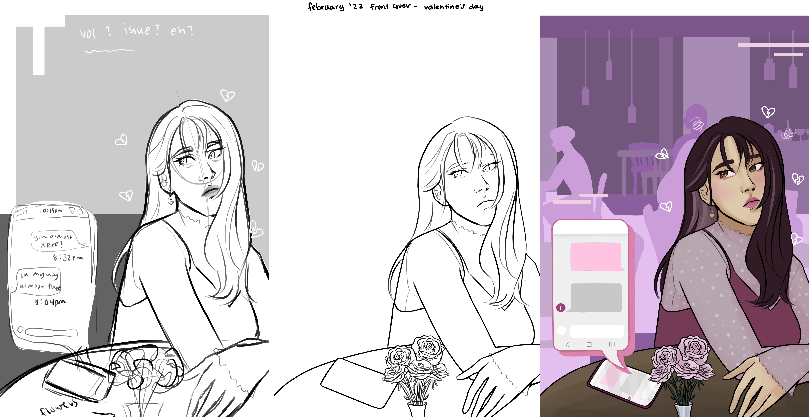
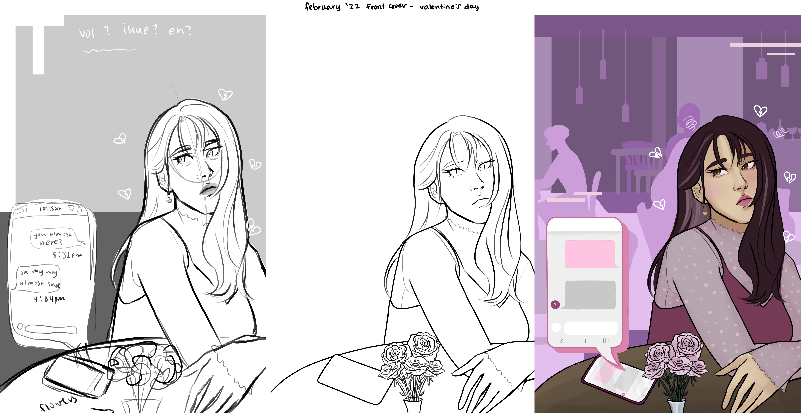

Technique
The Technique is the south's liveliest college newspaper. I often work with Technique and their head design editor
to create covers for their physical and digital papers. I draw each of these pieces digitally by hand using a
drawing software called Medibang on my iPad. Then I throw each cover into Photoshop/Illustrator for touch-ups
and for placing the required text for each issue.
Each issue of the newspaper follows a specific theme, and I give my design proposal to the editor (which could include
sketches for each idea) before starting to seriously continue with a design. Below I have linked images of the process
I go through for each of these covers.
Below I have attached the process I went through for a few of the covers from sketch to final drawing. This is each cover without
the logo and text for issue and volume numbers included.
 
